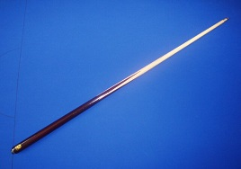
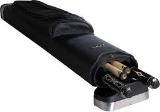
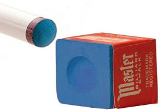
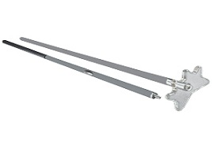
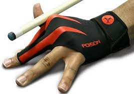

Tools
Cue
The most basic tool any pool player needs is a cue. They come in many different sizes and colors and some are best used for certain types of shots. There are break cues which are designed for breaking the rack, jump cues for when you need to jump or masse a ball, and there are your basic cues which you use for most shots and can be used for breaking and jumping. If buying your own cue, choose a basic cue with a simple design, the weight that feels most comfortable when you play, and within $100 and $300 so that you know you are getting a good quality cue.
Cue Case
If you're going to buy your own cue, you're going to need a case for it. Some cases fit just one cue, others fit at least three full cues (butt and shaft), and others fit uneven numbers of butts and shafts (such as a 2x4 case). When choosing a case, make sure it's made of a water-proof material so that your cue isn't damaged when it rains.
Chalk
Cue chalk comes in many different brands and colors, but typically it is blue and most people use the Masters brand. Cue chalk is a necessity because without it you could miscue and miss your shots, therefore always chalk your cue tip after each shot (or as often as possible).
Bridge
The bridge is the most unappreciated pool tool available, because many people see it as a form of cheating or wimping out on tough shots, but like the cue it is a tool. It is used to help a player reach across the table shots that they don't have the reach for and to help bridge over groups of balls. So whenever you see and difficult to reach shot, don't be afraid to use the bridge.
Glove
Gloves are not for everyone; they can make your stroke smoother by decreasing the friction between your hand and the cue. On the other hand, many people prefer the feel of the cue on their hand without the cloth in between.